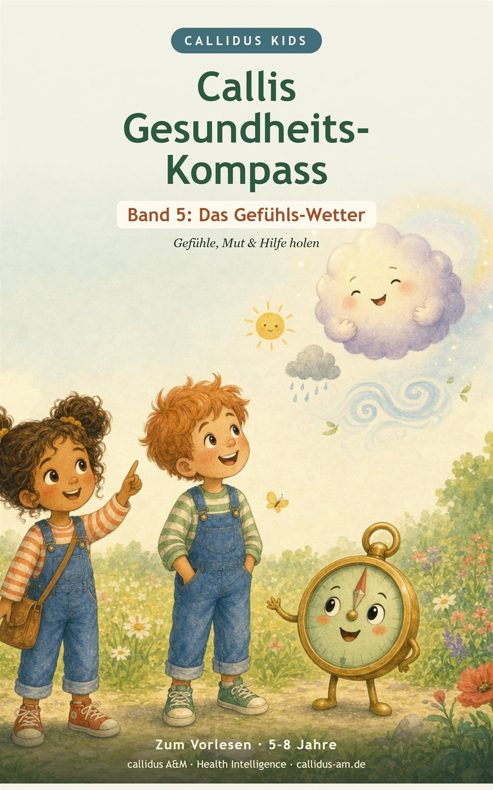
Für alle Kinder, bei denen es manchmal drinnen stürmt — und die lernen, dass jedes Wetter wieder vorbeizieht.
Mit Calli, Mira, Noah — und Wolki, der Gefühls-Wolke.
Manchmal fühlst du dich wie strahlender Sonnenschein. Und manchmal ist in dir drin auf einmal Regen, Donner oder ein wirbeliger Wind.
Das ist alles völlig in Ordnung. Gefühle sind wie Wetter: Sie kommen, sie bleiben ein Weilchen — und sie ziehen wieder weiter.
In diesem Buch lernst du dein eigenes Gefühls-Wetter kennen. Du lernst, wie du es erkennst, was du damit machen kannst und warum es stark ist, sich Hilfe zu holen.
Und du merkst: Du bist mit keinem Gefühl allein.
Kinder erleben starke Gefühle oft, bevor sie Worte dafür haben. Dieses Buch gibt ihnen ein Bild an die Hand — das Wetter —, mit dem sie Gefühle benennen, einordnen und aushalten lernen.
Die Kernbotschaften: Alle Gefühle dürfen sein, Gefühle vergehen wieder, ein Gefühl zu benennen macht es kleiner, und über Gefühle zu reden bzw. sich Hilfe zu holen ist ein Zeichen von Stärke. Sie begleiten Ihr Kind am besten, indem Sie Gefühle zulassen, benennen und da sind — ohne sie wegzureden.
„Wie fühlst du dich heute?", fragte Calli.
Noah überlegte. „Weiß nicht. So … mittel? Ein bisschen alles auf einmal."
„Das kenne ich", sagte eine weiche Stimme. Über ihnen schwebte plötzlich ein kleines, rundes Wölkchen in zartem Creme-Lila. Es lächelte.
„Ich bin Wolki", sagte die kleine Wolke. „Ich zeige, wie es dir gerade drinnen geht — als Wetter."
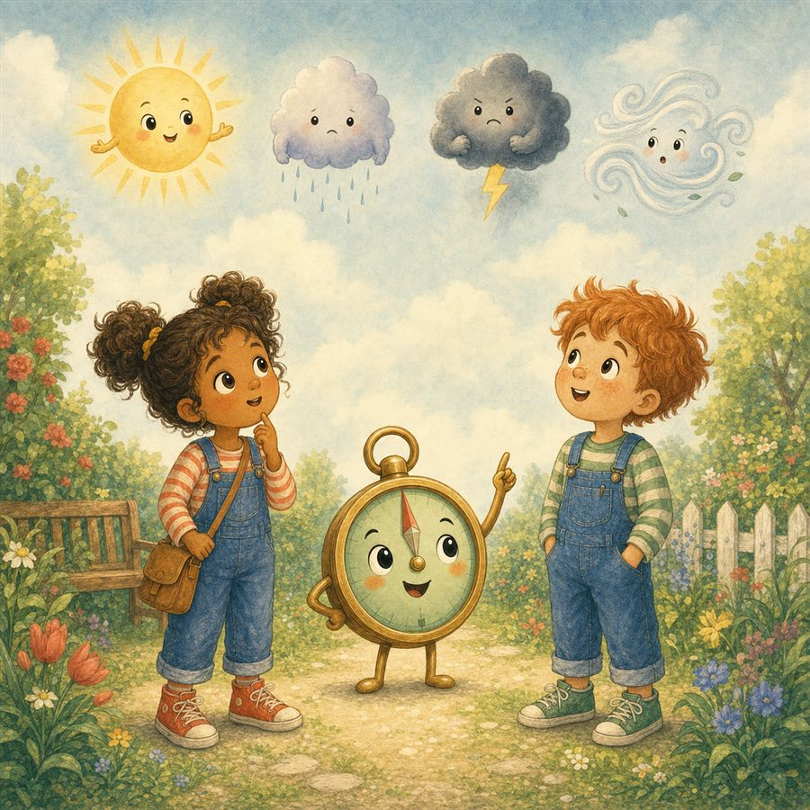
Wolki wirbelte einmal im Kreis — und über den Kindern zogen kleine Wetter vorbei: eine warme Sonne, ein grauer Regen, ein grummeliger Donner, ein flatteriger Wind.
„Freude ist wie Sonne", sagte Wolki. „Traurigkeit ist wie Regen. Wut ist wie Donner. Angst ist wie ein wirbeliger Wind."
„Und was ist das Beste?", fragte Mira.
„Kein Wetter bleibt für immer", sagte Wolki. „Auch der dickste Donner zieht wieder weiter."
Callis Schlau-Seite
Gefühle sind ganz normal — jeder Mensch hat sie, jeden Tag.
Es gibt keine „schlechten" Gefühle. Manche fühlen sich nur unangenehm an.
Gefühle vergehen wieder — wie Wetter.
Wenn du weißt, welches Gefühl du hast, kannst du besser damit umgehen.
Callis Satz für dieses Kapitel
Jedes Gefühl darf da sein — und jedes zieht auch wieder weiter.
Mitmach-Kompass
Halte kurz inne und spüre in dich hinein.
Ist in dir gerade Sonne, Regen, Donner oder Wind?
Zeig mit dem ganzen Körper, wie sich dein Wetter anfühlt.
Es darf sich auch mischen — mehrere Wetter auf einmal sind erlaubt.
„Bei mir ist heute Sonne mit ein paar Wolken", sagte Mira. „Gut beobachtet", sagte Wolki.
Kinder können Gefühle oft leichter zeigen als benennen. Das Wetter-Bild gibt ihnen eine einfache Sprache dafür.
Fragen Sie im Alltag ruhig einmal: „Welches Wetter hast du gerade?" Das öffnet ein Gespräch, ohne zu bewerten — und übt, Gefühle wahrzunehmen, statt sie zu unterdrücken.
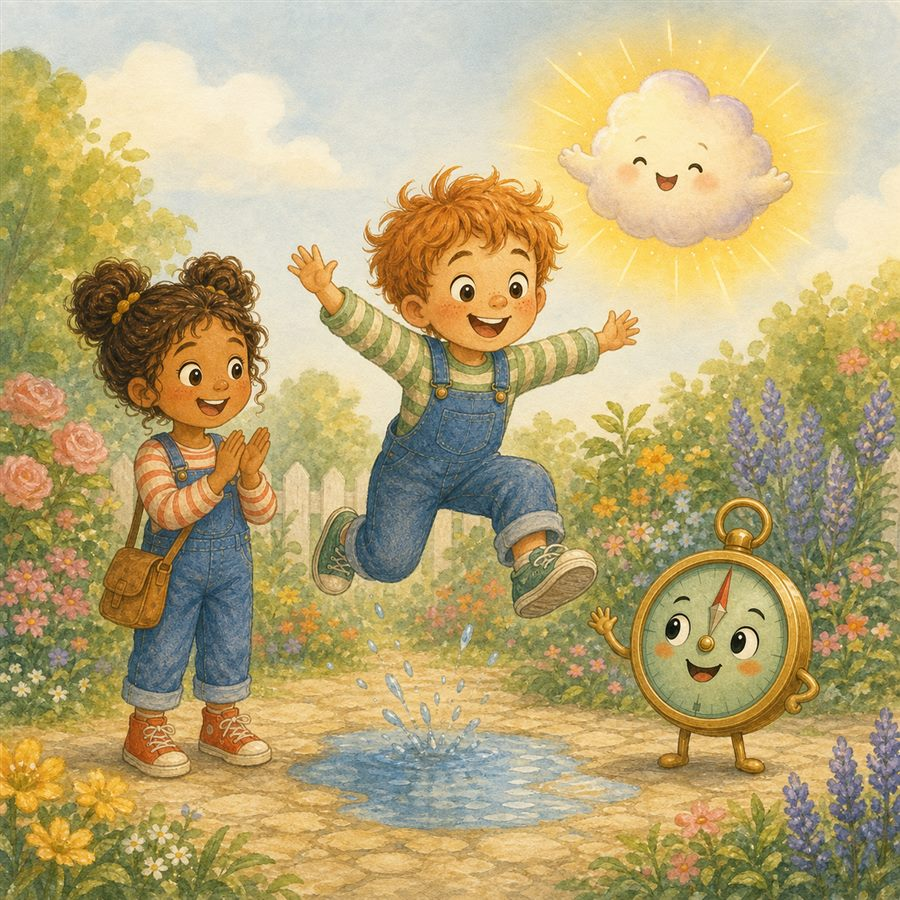
Als Noah einen riesigen Sprung über die Pfütze schaffte, kribbelte etwas Warmes in seinem Bauch. Wolki leuchtete plötzlich golden, und kleine Sonnenstrahlen tanzten um sie herum.
„Das ist Freude", sagte Wolki fröhlich. „Dein Sonnen-Gefühl."
„Es kitzelt", lachte Noah.
„Freude darf kitzeln, hüpfen und laut sein", sagte Calli. „Sie will raus."
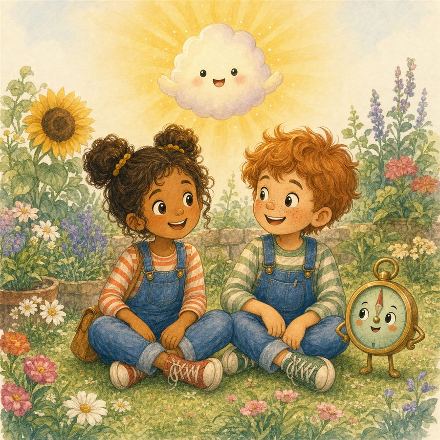
Mira hatte etwas Schönes erlebt und erzählte es Noah. Als Noah sich mitfreute, wurde Wolkis Sonne noch ein bisschen heller.
„Habt ihr das gesehen?", sagte Wolki. „Geteilte Freude wird größer."
„Wie ein Sonnenstrahl, der noch einen Sonnenstrahl bekommt", sagte Mira.
„Genau", sagte Calli. „Erzähl von deiner Freude — dann leuchtet sie doppelt."
Callis Schlau-Seite
Freude fühlt sich oft warm und leicht an — im Bauch, in der Brust, im ganzen Körper.
Freude darf man zeigen: lachen, hüpfen, singen.
Geteilte Freude wird größer — erzähl anderen davon.
Auch kleine Dinge machen Freude: ein Sonnenstrahl, ein Lieblingsessen, ein gutes Spiel.
Callis Satz für dieses Kapitel
Freude ist Sonne im Bauch — und sie leuchtet heller, wenn du sie teilst.
Mitmach-Kompass
Denk an drei Dinge, die dir heute Freude gemacht haben.
Ganz kleine zählen auch.
Erzähl sie jemandem, den du magst.
Male dir eine Sonne für jedes schöne Ding.
„Mein Sprung über die Pfütze war eine ganze Sonne wert", sagte Noah. „Sogar mit Strahlen", sagte Wolki.
Positive Gefühle bewusst wahrzunehmen und zu teilen stärkt Kinder nachhaltig. Wer gelernt hat, Freude zu benennen, kann sie später leichter selbst herstellen.
Kleine tägliche Rituale („Was war heute schön?") lenken den Blick auf das Gelingende — ein einfacher, wirksamer Baustein für seelisches Wohlbefinden.
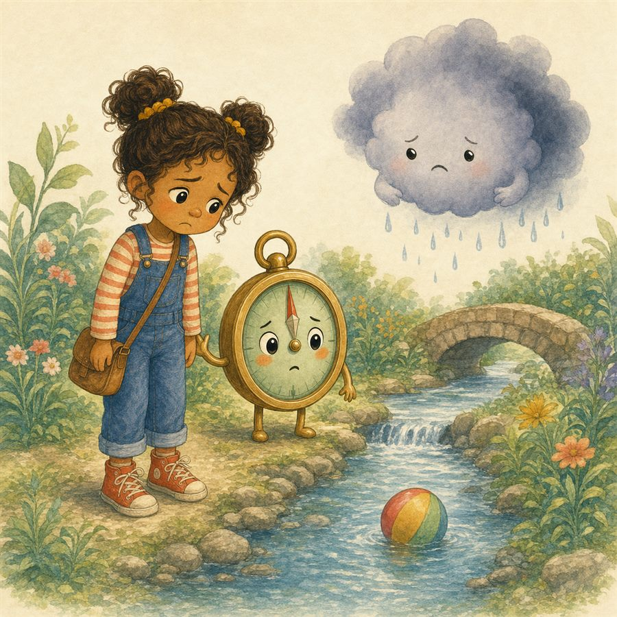
Miras Lieblingsball rollte in den Bach und schwamm davon. In ihr wurde alles schwer und grau. Wolki färbte sich sanft grau, und ein feiner Nieselregen begann.
„Das ist Traurigkeit", sagte Wolki leise. „Dein Grau-Regen."
„Der ist doof", schniefte Mira.
„Er fühlt sich unangenehm an", sagte Calli sanft. „Aber er gehört dazu. Traurig sein ist erlaubt."
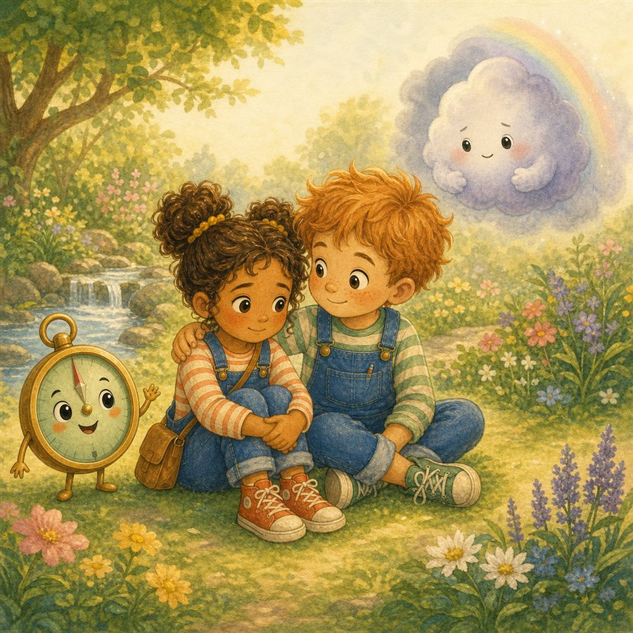
Noah setzte sich zu Mira und legte einen Arm um sie. Er sagte gar nicht viel — er war einfach da.
Nach einer Weile fühlte sich der Regen in Mira ein bisschen leichter an. Am Rand von Wolki begann ganz zart ein Regenbogen zu schimmern.
„Trost ist wie ein Regenschirm", sagte Wolki. „Er macht den Regen nicht weg. Aber man steht nicht mehr allein darin."
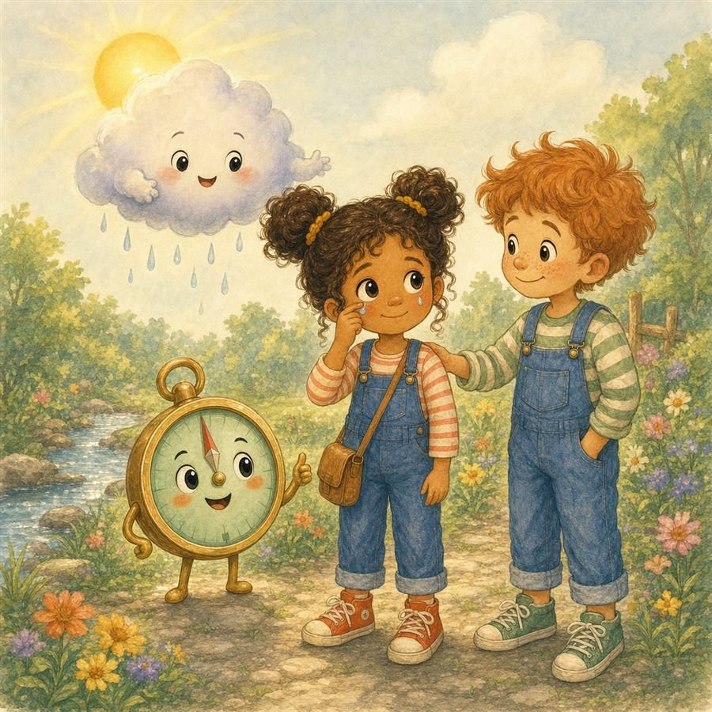
Eine Träne kullerte über Miras Wange. „Weinen ist gut", sagte Wolki. „So darf der Regen aus dir heraus."
Und tatsächlich: Als Mira ein bisschen geweint hatte, wurde der Himmel in ihr wieder heller. Wolki regnete sich aus — und dann kam die Sonne hervor.
„Siehst du?", sagte Calli. „Nach dem Regen wird es wieder hell. Immer."
Callis Schlau-Seite
Traurigkeit fühlt sich oft schwer und grau an — das ist normal.
Weinen ist gesund: So darf der „Regen" heraus.
Trost hilft — jemand, der einfach da ist, macht das Grau leichter.
Auch Traurigkeit zieht wieder vorbei. Nach dem Regen kommt die Sonne.
Callis Satz für dieses Kapitel
Traurig sein ist erlaubt — und nach jedem Grau-Regen wird es wieder hell.
Mitmach-Kompass
Überleg dir, was dir guttut, wenn du traurig bist.
Eine Umarmung? Ein Kuscheltier? Ein Lied? Jemandem davon erzählen?
Mal oder schreib deinen Trost-Plan auf.
Wenn der Grau-Regen kommt, weißt du dann schon, was hilft.
„Bei mir hilft eine Umarmung und mein Kuschelhase", sagte Mira. „Ein guter Plan", sagte Wolki.
Traurigkeit braucht keinen schnellen Trost-Reflex („Ist doch nicht so schlimm"), sondern Mitgefühl und Nähe. Kinder lernen so, dass unangenehme Gefühle aushaltbar sind und vorbeigehen.
Da sein, benennen („Du bist traurig, das darf sein") und Trost anbieten stärkt die emotionale Widerstandskraft mehr als Ablenkung oder Wegreden.
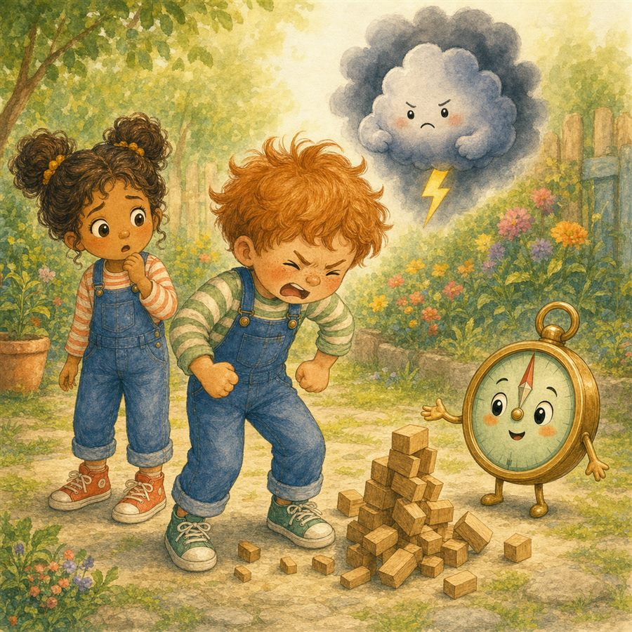
Noahs Turm fiel zum dritten Mal um. In ihm wurde es heiß und laut. Wolki färbte sich dunkelgrau, und ein kleiner Blitz zuckte.
„Das ist Wut", sagte Wolki. „Dein Donner-Gefühl."
„Grrr!", machte Noah und ballte die Fäuste.
„Wütend sein ist völlig okay", sagte Calli ruhig. „Wut zeigt: Dir ist etwas wichtig. Nur — was man mit der Wut MACHT, darauf kommt es an."
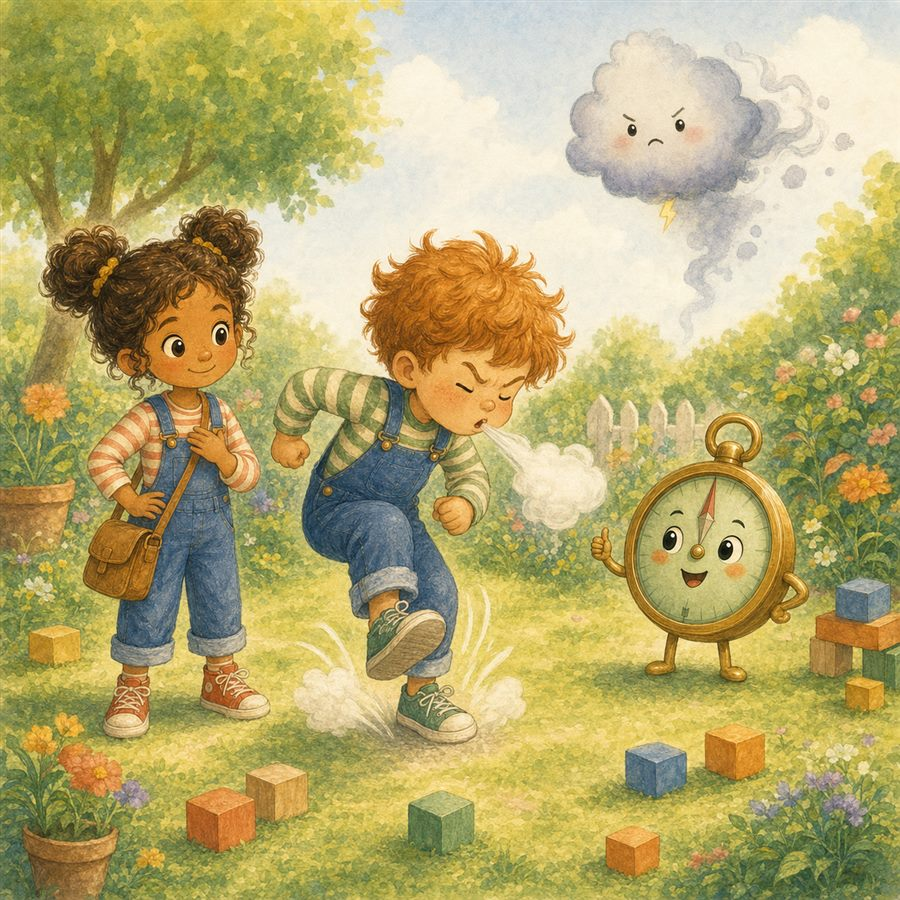
„Schnell", sagte Wolki. „Bei Donner hilft: stehen bleiben, tief durchatmen — und stampfen statt hauen."
Noah stampfte dreimal fest auf den Boden und pustete den Donner aus wie eine Kerze. „Fffff."
Der Blitz in Wolki wurde kleiner. Der Donner grummelte nur noch leise.
„Deine Wut darf laut sein", sagte Calli. „Aber sie darf niemandem wehtun — auch dir nicht."
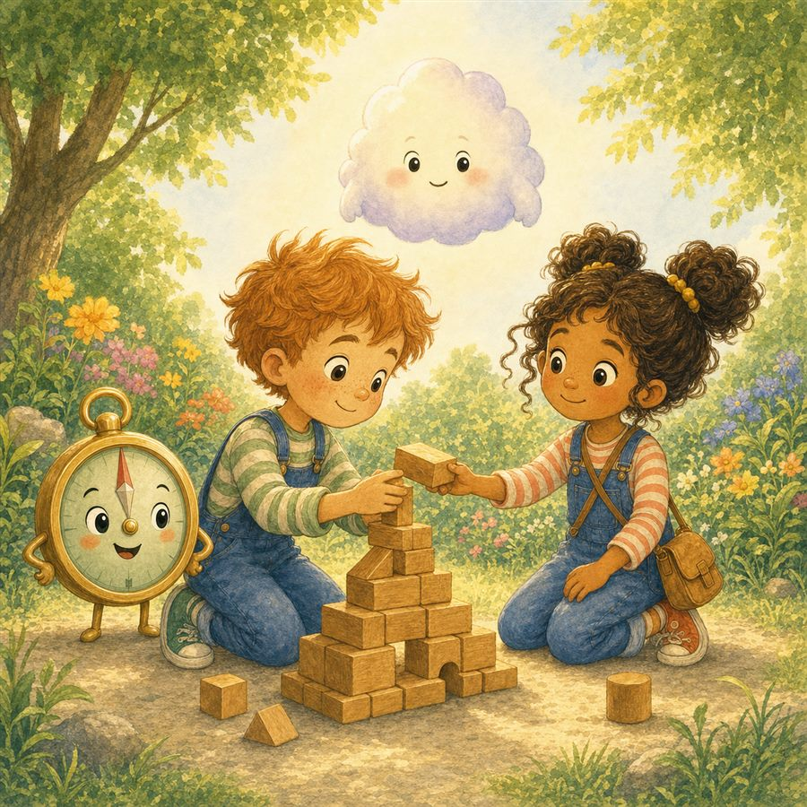
Langsam wurde Noah wieder ruhiger. Der heiße Kopf kühlte ab, und Wolki hellte auf.
„Puh", sagte Noah. „Jetzt ist der Donner weg."
„Und niemand hat wehgetan bekommen", sagte Wolki stolz. „Nicht mal der Turm."
Noah grinste. „Den bau ich jetzt noch mal. Diesmal mit einem breiteren Fuß."
Callis Schlau-Seite
Wut ist normal — sie zeigt: Dir ist etwas wichtig oder unfair.
Wütend sein ist erlaubt. Hauen, treten oder beißen nicht.
Bei Wut hilft: stehen bleiben, tief atmen, stampfen, ausschütteln.
Wenn die Wut weg ist, kann man oft besser reden und Lösungen finden.
Callis Satz für dieses Kapitel
Dein Donner darf laut sein — aber er darf niemandem wehtun.
Mitmach-Kompass
Wenn Wut kommt, probier den Donner-Ableiter.
Stampf dreimal fest auf den Boden.
Atme tief ein und puste die Wut aus wie eine Kerze.
Schüttel Arme und Beine aus, als wärst du ein Wackelpudding.
„Ich puste meinen Donner weg", sagte Noah. „Fffff — und weg ist er", lachte Wolki.
Wut ist ein gesundes Signal, kein Fehlverhalten. Hilfreich ist die klare Trennung: Das Gefühl ist erlaubt, bestimmte Handlungen nicht.
Benennen Sie das Gefühl ruhig („Du bist wütend"), bieten Sie sichere Ventile (stampfen, atmen, sich ausschütteln) und besprechen Sie Lösungen erst, wenn der „Donner" abgezogen ist — im Sturm lässt sich schlecht verhandeln.
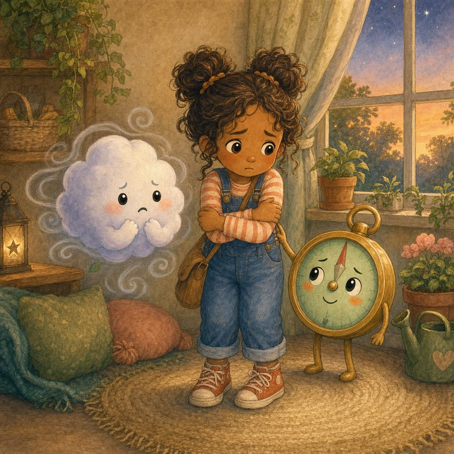
Morgen war Miras erster Schwimmkurs. In ihrem Bauch flatterte es wie tausend kleine Blätter im Wind. Wolki wurde blass und wirbelig.
„Das ist Angst", sagte Wolki sanft. „Dein Flatter-Wind."
„Ich trau mich nicht", flüsterte Mira.
„Angst ist klug", sagte Calli. „Sie passt auf dich auf. Aber manchmal flattert sie auch, wenn gar keine Gefahr da ist — nur etwas Neues."
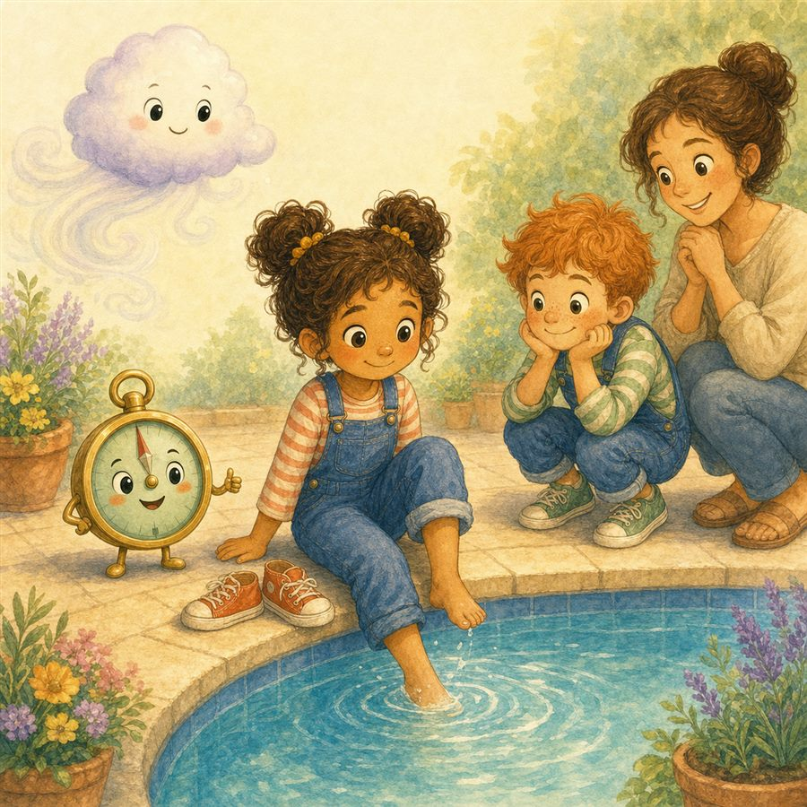
„Weißt du, was Mut ist?", fragte Wolki. „Mut heißt nicht, keine Angst zu haben. Mut heißt: es trotzdem zu versuchen — ein kleines bisschen."
Am nächsten Tag ging Mira mit klopfendem Herzen zum Beckenrand. Und dann steckte sie einen Fuß ins Wasser. Nur einen Fuß. Aber sie hatte es getan.
Der Flatter-Wind in ihr wurde ruhiger. „Ich hab mich getraut", strahlte Mira.
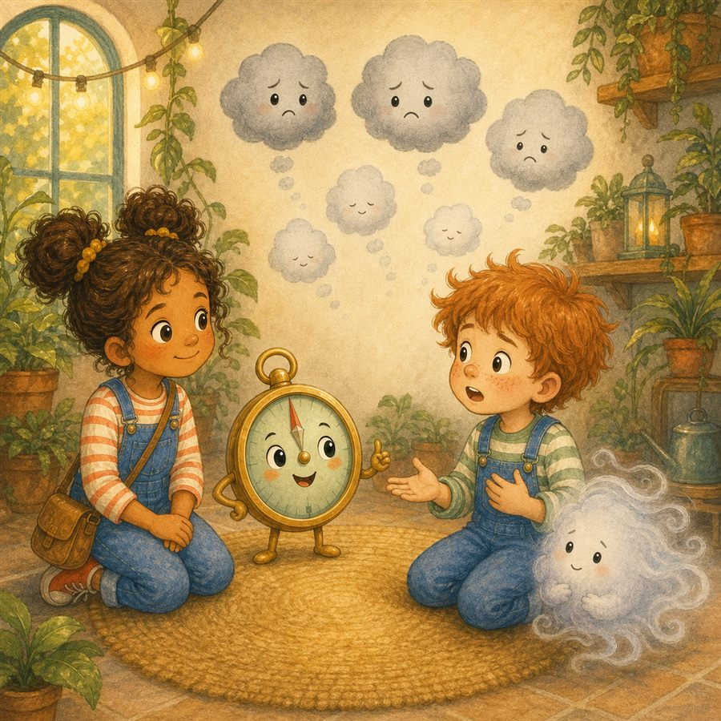
Manchmal, sagte Wolki, kommt der Wind auch als kleine Sorgen-Wölkchen: „Was, wenn morgen etwas schiefgeht?"
„Dann hilft es, die Sorge laut auszusprechen", sagte Calli. „Ausgesprochen wird sie oft viel kleiner."
Noah sagte seine Sorge laut — und musste selbst ein bisschen darüber schmunzeln, wie klein sie plötzlich war.
Callis Schlau-Seite
Angst ist nützlich: Sie warnt dich vor echter Gefahr.
Manchmal flattert sie auch bei etwas Neuem, das gar nicht gefährlich ist.
Mut heißt nicht, keine Angst zu haben — Mut heißt, es trotzdem zu versuchen.
Sorgen werden kleiner, wenn du sie aussprichst.
Callis Satz für dieses Kapitel
Mut ist nicht ohne Angst — Mut ist, den ersten kleinen Schritt trotzdem zu tun.
Mitmach-Kompass
Denk an etwas, das dir ein bisschen Angst macht, aber nicht gefährlich ist.
Was wäre ein ganz kleiner erster Schritt?
Nicht alles auf einmal — nur ein Fuß ins Wasser.
Trau dich diesen einen kleinen Schritt. Danach darfst du stolz sein.
„Mein erster Schritt war ein Fuß ins Wasser", sagte Mira. „Ein mutiger Fuß", sagte Wolki.
Ängste gehören zur Entwicklung. Kinder brauchen weder Beschämung („Stell dich nicht so an") noch Vermeidung, sondern begleitete kleine Schritte.
Nehmen Sie die Angst ernst, benennen Sie sie und ermutigen Sie zu einem machbaren ersten Schritt. Erfolgserlebnisse im Kleinen bauen echtes Selbstvertrauen auf. Bei anhaltenden, stark einschränkenden Ängsten hilft fachlicher Rat.
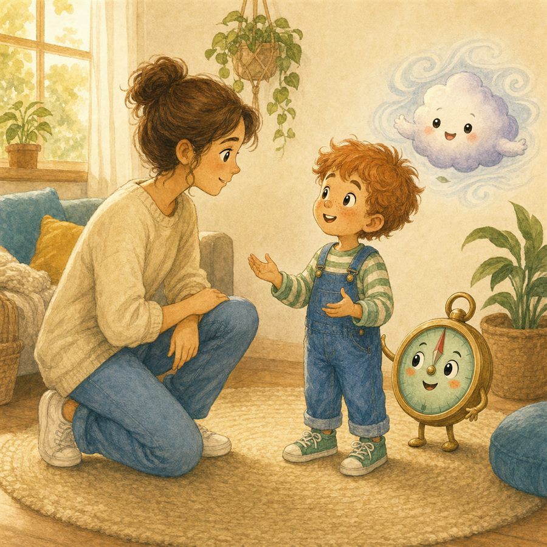
Einmal war in Noah so viel Wetter auf einmal — ein bisschen Regen, ein bisschen Wind —, dass er gar nicht wusste, wohin damit.
„Dann erzähl es jemandem", sagte Wolki. „Gefühle mag man nicht gern allein tragen."
Noah ging zu seiner Mama und sagte einfach: „Mir geht es gerade komisch." Sie hörte zu. Und schon fühlte sich das Wetter in Noah ein Stück leichter an.
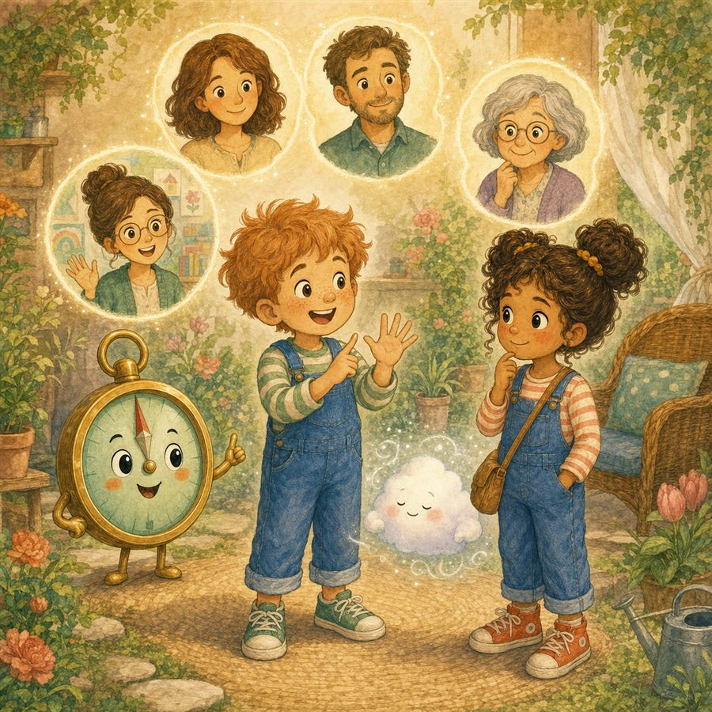
„Wem kann ich denn alles erzählen?", fragte Noah.
„Deinen Vertrauensmenschen", sagte Calli. „Das sind Große, bei denen du dich sicher fühlst."
Noah zählte auf: Mama, Papa, Oma, seine Erzieherin. „Das sind ganz schön viele", staunte er.
„Und alle helfen gern", sagte Wolki. „Du musst nur Bescheid sagen."
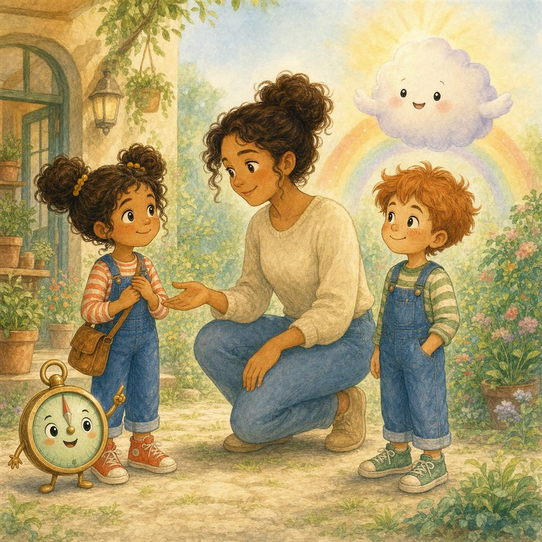
„Aber sind starke Kinder nicht die, die alles allein schaffen?", fragte Mira.
„Nein", sagte Calli bestimmt. „Starke Kinder wissen, wann sie Hilfe holen. Das ist das Allermutigste überhaupt."
Wolki nickte. „Um Hilfe bitten ist kein Zeichen von schwach. Es ist ein Zeichen von schlau."
Mira reckte sich. „Dann bin ich also mutig, wenn ich Bescheid sage." „Sehr sogar", sagte Calli.
Callis Schlau-Seite
Gefühle muss man nicht allein tragen — reden hilft.
Vertrauensmenschen sind Große, bei denen du dich sicher fühlst (Eltern, Oma und Opa, Erzieher und Erzieherinnen, Lehrkräfte).
Um Hilfe bitten ist stark und schlau — nicht schwach.
Wenn dich etwas sehr drückt oder Angst macht, sag immer einem Vertrauensmenschen Bescheid.
Callis Satz für dieses Kapitel
Hilfe holen ist das Mutigste, was du tun kannst.
Mitmach-Kompass
Überleg: Wer sind deine Vertrauensmenschen?
Mal oder schreib mindestens drei von ihnen auf.
Häng den Zettel an einen Platz, den du gut siehst.
Wenn dein Wetter mal zu stürmisch wird, weißt du dann sofort, wen du fragen kannst.
„Auf meinem Zettel sind fünf Menschen", sagte Noah. „Fünf Regenschirme", sagte Wolki.
Kinder brauchen die klare Erlaubnis, sich Hilfe zu holen — und verlässliche Bezugspersonen, die zuhören, ohne sofort zu bewerten oder zu lösen.
Signalisieren Sie: „Du darfst mir alles erzählen." Sprechen Sie mit Ihrem Kind konkret über seine Vertrauenspersonen. Das ist zugleich ein wichtiger Baustein für Selbstschutz und seelische Gesundheit.
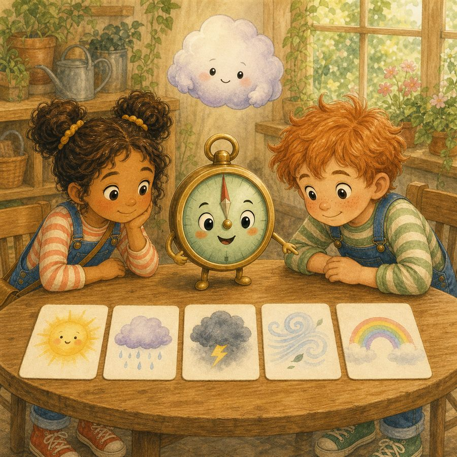
Am Sonntag legte Calli ein paar ruhige Karten auf den Tisch. „Der Gefühls-Wetter-Kompass", sagte er. „Kleine Ideen für stürmische und für sonnige Tage."
Auf den Karten waren die Wetter zu sehen: Sonne, Regen, Donner, Wind — und ein Regenbogen.
„Keine Regeln", sagte Calli. „Nur Hilfen, damit du dich in deinem Wetter besser auskennst."
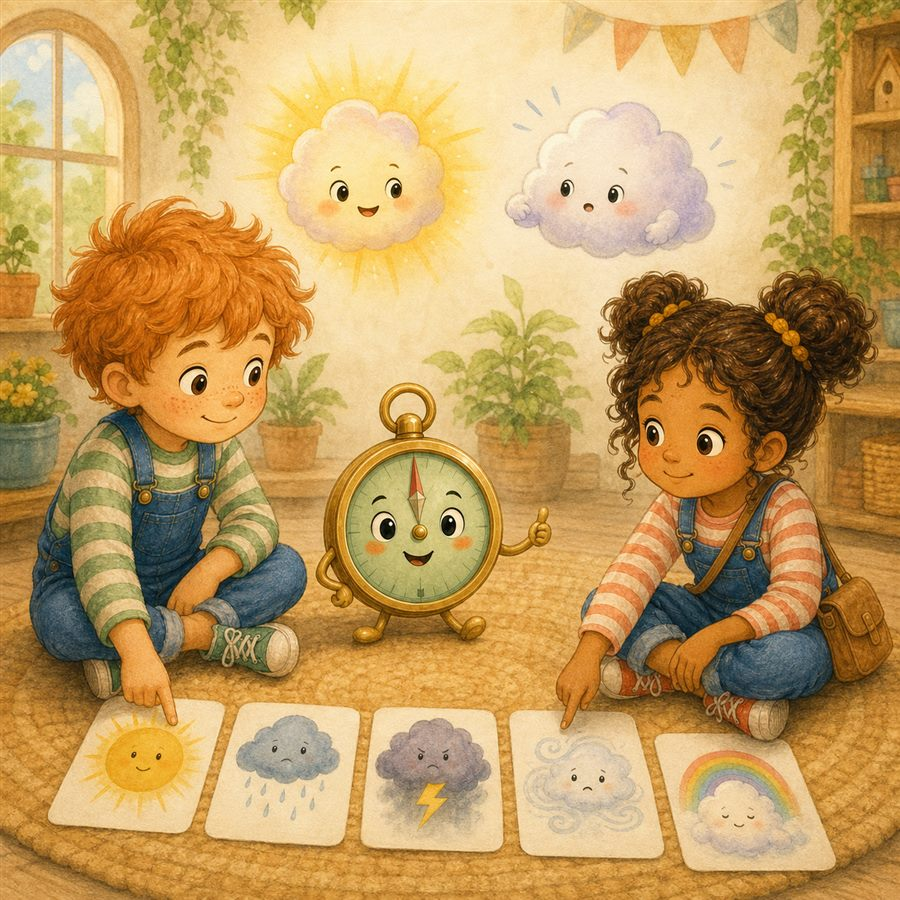
„Der wichtigste Trick", sagte Wolki, „ist ganz einfach: Sag, welches Wetter du hast."
„Ich bin traurig. Ich bin wütend. Ich freu mich. Ich hab Angst."
„Wenn du dein Wetter benennst", sagte Calli, „bist du schon der Wetter-Beobachter — und nicht mehr mitten im Sturm gefangen."
Mira probierte es. „Gerade bin ich neugierig", sagte sie. „Ein schönes Wetter", lächelte Wolki.
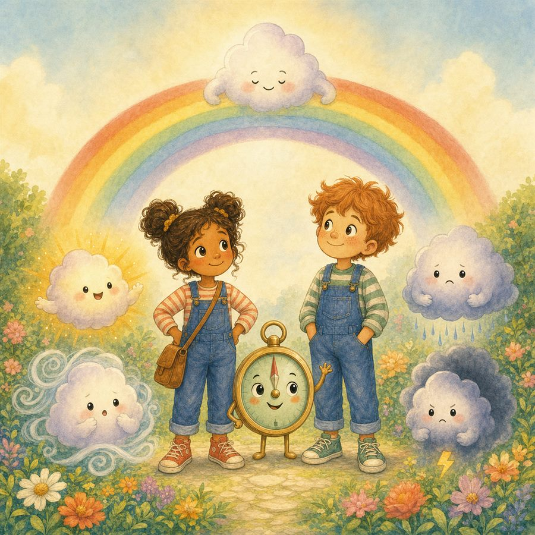
„Und was, wenn ich ein Wetter doof finde?", fragte Noah.
„Du musst es nicht mögen", sagte Wolki. „Aber du darfst es haben. Sonne, Regen, Donner, Wind — sie alle gehören zu dir."
Über allen zusammen spannte sich ein großer, weicher Regenbogen.
„Ein Regenbogen", sagte Calli, „entsteht sogar erst, wenn Sonne UND Regen da sind."
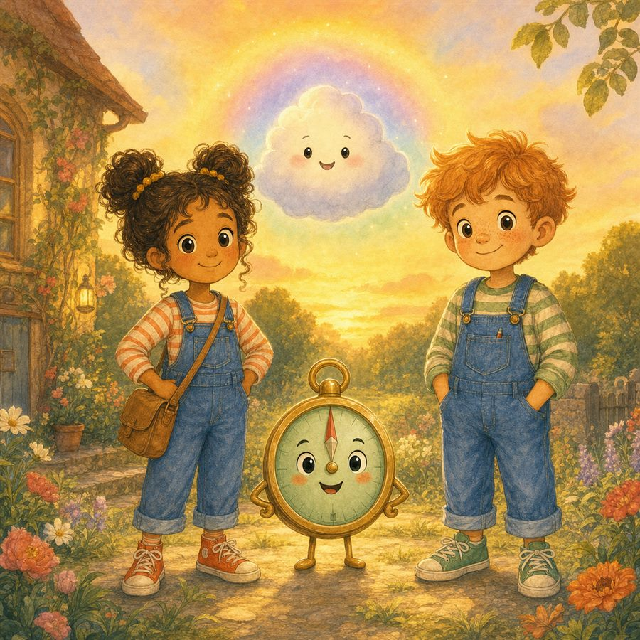
Am Abend saßen alle zusammen. „Ihr habt viel gelernt", sagte Calli. „Was denn?", fragte Noah.
Mira zählte auf: „Alle Gefühle dürfen sein. Sie ziehen wieder vorbei. Man kann sie benennen. Wut darf niemandem wehtun. Mut ist der erste kleine Schritt. Und Hilfe holen ist stark."
„Damit seid ihr offiziell", sagte Calli feierlich. „Gefühls-Helden."
Wolki strahlte in allen Regenbogenfarben. „Meine wetterfesten Helden."
1. Gibt es „schlechte" Gefühle? (a) ja (b) nein, nur unangenehme (c) nur dienstags
2. Wie lange bleibt ein Gefühl? (a) für immer (b) es zieht vorbei wie Wetter (c) genau 100 Jahre
3. Was ist bei Wut erlaubt? (a) hauen (b) wütend sein, aber niemandem wehtun (c) beißen
4. Was heißt Mut? (a) keine Angst haben (b) es trotzdem versuchen (c) ganz laut schreien
5. Was macht ein Gefühl kleiner? (a) es verstecken (b) es benennen und darüber reden (c) nichts
6. Ist Hilfe holen schwach? (a) ja (b) nein, es ist stark und schlau (c) nur am Wochenende
Auflösung: 1b · 2b · 3b · 4b · 5b · 6b — Gefühls-Held / Gefühls-Heldin!
callidus KIDS · Callis Gesundheits-Kompass
für einen echten Gefühls-Helden / eine echte Gefühls-Heldin
(Dein Name)
hat mit Calli und Wolki gelernt:
Alle Gefühle dürfen sein, jedes Wetter zieht vorbei, ein Gefühl benennen hilft, Wut darf niemandem wehtun —
und wer nicht weiterweiß, darf reden und Hilfe holen.
✂ Zum Ausschneiden
Kinder lernen Gefühlsregulation vor allem in Beziehung. Wenn Erwachsene Gefühle zulassen, benennen und aushalten, lernt das Kind: Auch starke Gefühle sind sicher und gehen vorbei.
Hilfreich ist die Haltung „Alle Gefühle sind willkommen, nicht alle Handlungen". Weniger hilfreich sind Wegreden („Ist doch nicht schlimm"), Beschämen oder Bestrafen von Gefühlen.
„Du bist gerade wütend — das darf sein." · „Ich bin hier, du musst das nicht allein tragen." · „Welches Wetter hast du gerade?" · „Nach dem Regen wird es wieder hell." · „Das war mutig, dass du es mir erzählt hast."
Solche Sätze geben Halt, ohne das Gefühl zu bewerten — und sind oft wirksamer als jede schnelle Lösung.
Woher wissen Erwachsene das? Fachleute, die sich mit den Gefühlen von Kindern beschäftigen, beobachten: dass es hilft, Gefühle zu benennen, dass alle Gefühle einen Sinn haben, dass Kinder Gefühle in guter Begleitung regulieren lernen und dass über Gefühle sprechen und Hilfe holen die seelische Gesundheit stärkt.
Vor der Veröffentlichung fachlich gegenlesen lassen. Startpunkte: entwicklungspsychologische Grundlagen zur Emotionsregulation bei Kindern, Materialien zu emotionaler Kompetenz und zum Benennen von Gefühlen, kinder- und jugendpsychologische Empfehlungen zu Ängsten und zum Umgang mit Wut.
Die Quellen werden in der finalen Ausgabe kompakt angegeben.
callidus macht Gesundheitswissen verständlich — klar, freundlich, alltagstauglich.
Callis Gesundheits-Kompass übersetzt diese Haltung für Familien: mit weniger Druck, mehr Neugier — und diesmal mit einem Kompass, der weiß, dass auch der dickste Donner wieder weiterzieht.
Band 1: Hör auf deinen Körper — Körpersignale.
Band 2: Das Zucker-Monster — Essen, Trinken und Energie.
Band 3: Der Zappelmotor — Bewegung, Pausen und Gute-Laune-Funken.
Band 4: Die Schlaf-Werkstatt — Schlaf, Träume und die innere Uhr.
Band 5: Das Gefühls-Wetter — Gefühle, Mut und Hilfe holen. (dieses Buch)
Callis Gesundheits-Kompass · Band 5: Das Gefühls-Wetter · Reihe: callidus KIDS · 1. Auflage 2026
Text, Konzept & Herausgabe: callidus A&M
Illustrationen: Digitale Aquarell-Illustrationen, KI-gestützt erstellt und redaktionell überarbeitet, auf Basis fester Character-Sheets.
Verantwortlich i. S. d. Presserechts: callidus A&M · Arnold Jedich (Geschäftsführer) · Gerstenstraße 12 · 86356 Neusäß · Deutschland · Kontakt: Telefon 0179 7007772 · info@callidus-am.de · www.callidus-am.de
© 2026 callidus A&M. Alle Rechte vorbehalten. Kein Teil dieses Werkes darf ohne schriftliche Zustimmung reproduziert, vervielfältigt oder verbreitet werden.
Dieses Buch vermittelt allgemeines Gesundheitswissen für Familien und ersetzt keine ärztliche, psychologische oder therapeutische Beratung.
Ein Teil der Bildproduktion entsteht mit KI-gestützten Bildwerkzeugen und wird vor Veröffentlichung geprüft, überarbeitet und bei Amazon KDP entsprechend deklariert.
Die Texte vermitteln allgemeines Gesundheitswissen und ersetzen keine ärztliche, psychologische oder therapeutische Beratung. Bei anhaltenden, stark belastenden Gefühlen, Ängsten oder Sorgen eines Kindes wenden Sie sich bitte an Kinderarzt oder Kinderärztin oder eine Erziehungs- und Familienberatungsstelle.
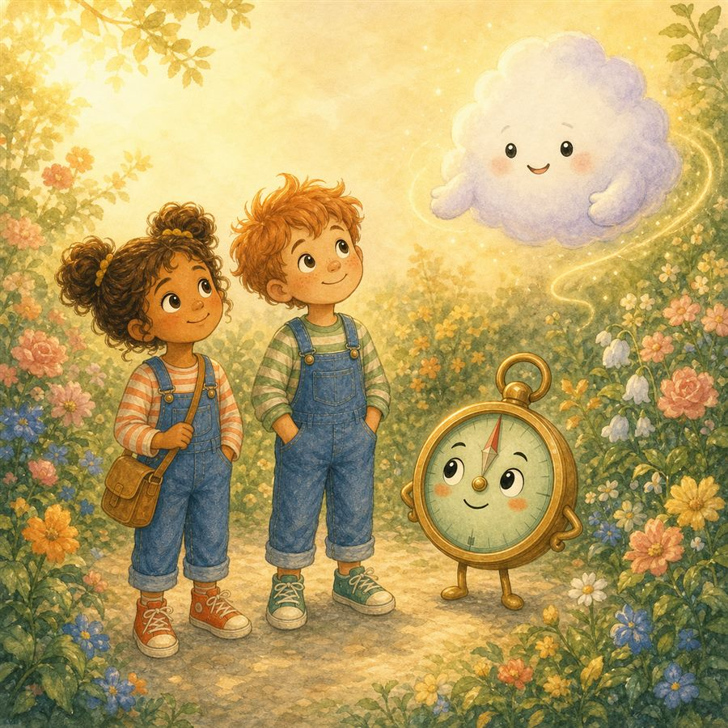
„Musst du jetzt gehen?", fragte Mira die kleine Wolke.
„Ich bin immer in der Nähe", sagte Wolki. „Jedes Mal, wenn in dir ein Wetter aufzieht, bin ich da. Du musst nur hinschauen."
Und tatsächlich: Seitdem wusste Mira bei jedem Gefühl, welches Wetter gerade in ihr war — und dass es wieder weiterziehen würde.
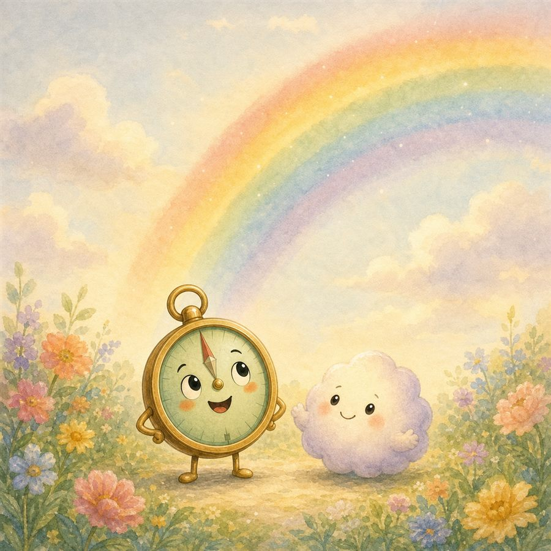
Calli schaute in den Himmel, wo sich ein leiser Regenbogen spannte.
„Denk immer daran", sagte er. „Kein Gefühl ist für immer. Und mit keinem bist du allein."
Ganz leise sagten Calli und Wolki zusammen: „Jedes Wetter darf kommen — und jedes zieht auch wieder weiter."